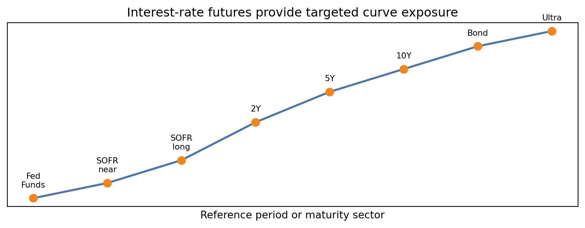
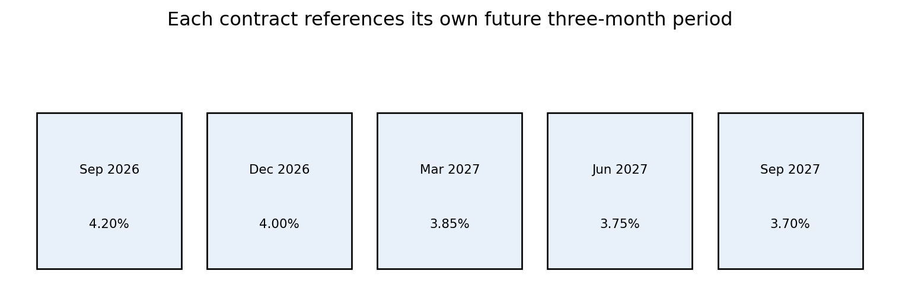

Interest-Rate Futures and Yield-Curve Trading
Learning Objectives
After completing this appendix you should be able to:
- Explain how different interest-rate futures contracts map to different parts of the yield curve.
- Distinguish short-rate futures exposure from Treasury futures exposure.
- Use SOFR futures to express views on the expected path of short-term rates.
- Use Treasury futures to express views on maturity-specific Treasury yields.
- Explain level, slope, and curvature trades.
- Size futures positions using dollar interest-rate exposure rather than equal contract counts.
1 The Central Idea
Interest-rate futures allow traders and portfolio managers to express views on movements in the interest-rate curve without trading the underlying cash instruments directly. The key point is that no single futures contract represents the entire yield curve. Each contract provides exposure to a particular rate, future period, or maturity sector.
Traders use collections of futures contracts to express views on:
- the future path of short-term interest rates;
- the level of interest rates;
- the slope of the curve;
- the curvature of the curve;
- changes in term premiums;
- relative movements between different maturity sectors.
| Instrument | Primary exposure |
|---|---|
| Fed Funds futures | Expected effective federal funds rate over a calendar month |
| Near-dated SOFR futures | Expected short rates over upcoming quarters |
| Long-dated SOFR futures | Three-month SOFR rates expected several years in the future |
| 2-Year Treasury futures | Short/intermediate Treasury sector |
| 5-Year Treasury futures | Intermediate Treasury sector |
| 10-Year Treasury futures | Intermediate/long Treasury sector |
| Treasury Bond futures | Long end |
| Ultra Bond futures | Very long end |
For Treasury futures, a name such as “10-Year Treasury futures” refers to the maturity sector of the eligible deliverable securities. It does not mean the futures contract itself expires in 10 years.
TipCurve Exposure Is Contract-Specific
A futures contract gives exposure to the rate or security sector specified by that contract. A complete yield-curve view often requires several futures contracts rather than one broad contract.
2 SOFR Futures as Forward Short-Rate Points
Every Three-Month SOFR futures contract references compounded SOFR over a particular future three-month period. A September contract, for example, references a different period from a December contract.
| Contract | Referenced period |
|---|---|
| September 2026 | September-December 2026 |
| December 2026 | December 2026-March 2027 |
| March 2027 | March-June 2027 |
| December 2030 | December 2030-March 2031 |
These contracts form a strip of forward three-month rates. Different expirations therefore provide exposure to different points on the expected future short-rate curve.
The quotation convention is:
\[ \text{SOFR futures price} = 100-\text{implied annualized SOFR}. \]
The direction is inverse:
- if expected SOFR rises, the futures price falls;
- if expected SOFR falls, the futures price rises.
Every standard Three-Month SOFR contract has approximately the same contract value of $25 per basis-point movement in its own implied rate. However, contracts with different expirations need not move by the same number of basis points because they reference different future periods.

Example: Nonparallel Movement in SOFR Futures
Suppose the initial market is:
| Contract | Futures price | Implied rate |
|---|---|---|
| September | 95.80 | 4.20% |
| December | 96.00 | 4.00% |
Now suppose the market concludes that the Federal Reserve will delay rate cuts until after the September reference period but will still cut before the December reference period.
| Contract | New implied rate | New futures price | Price change | Dollar P&L for one long contract |
|---|---|---|---|---|
| September | 4.35% | 95.65 | -15 bp | -$375 |
| December | 4.05% | 95.95 | -5 bp | -$125 |
The P&L calculation is:
\[ \text{P\&L} = 25 \times \text{price change in basis points}. \]
Both contracts have the same $25-per-basis-point contract sensitivity, but the underlying forward rates moved by different amounts. The September contract lost more because the September forward rate increased more.
In a parallel-shift scenario, both referenced forward rates rise by exactly 1 basis point. Then both futures prices fall by 0.01, and each long position loses $25.
3 Trading the Shape of the SOFR Forward Curve
SOFR futures can be combined to trade the shape of the expected future policy path. Common views include:
- expected timing of rate cuts or hikes;
- front-end steepening or flattening;
- relative movements between adjacent three-month periods;
- curvature in the expected policy path.
Scenario A: Faster Rate Cuts
Suppose a trader believes the market is underestimating future rate cuts over the next several quarters. If expected SOFR falls, SOFR futures prices rise. The trader can buy the relevant SOFR futures contracts.
For example, if the December contract rises from 96.00 to 96.20, the implied rate falls from 4.00% to 3.80%. A long position gains:
\[ 20 \times 25 = 500. \]
Scenario B: Delayed Rate Cuts
Suppose a trader believes near-term rates will remain high, but later rates will fall. The trader could sell a near SOFR futures contract and buy a more distant SOFR futures contract.
If the September contract falls by 10 basis points and the December contract rises by 10 basis points, a position short one September contract and long one December contract gains:
\[ 10 \times 25 + 10 \times 25 = 500. \]
This is a curve-shape trade, not a broad bet that all short rates move in the same direction.
Scenario C: Temporary Policy Tightening
Suppose a trader expects a temporary increase in rates during one three-month window, followed by normalization. The trader could sell the affected SOFR contract and buy the surrounding contracts.
For example, sell the March contract and buy the December and June contracts. If March falls by 12 basis points while December and June each rise by 3 basis points, the approximate P&L from one contract in each leg is:
\[ 12 \times 25 + 3 \times 25 + 3 \times 25 = 450. \]
Spread trades should generally be sized using appropriate basis-point exposure rather than equal dollar notionals. Equal contract counts are sometimes reasonable for simple SOFR calendar spreads because the standard contract value is similar across expirations, but the economic view still depends on which forward periods are being traded.
4 Why SOFR Futures Are Not Enough
SOFR futures primarily expose the trader to the expected path of future short-term secured rates. They do not provide complete exposure to Treasury yields.
A useful conceptual decomposition is:
\[ \text{Long-term Treasury yield} \approx \text{average expected future short rates} + \text{term premium}. \]
This is a conceptual decomposition, not an exact accounting identity.
Long-term Treasury yields may rise for two different reasons:
- The expected future path of short-term rates rises.
- Investors demand a higher term premium for holding long-duration bonds.
SOFR futures respond directly to the first source. Treasury securities and Treasury futures respond to both.
Scenario 1: Expected Short Rates Rise
Suppose the initial conditions are:
\[ \text{Expected average short rate over 10 years}=3.0\%. \]
\[ \text{Term premium}=0.50\%. \]
\[ \text{10-year Treasury yield}=3.50\%. \]
Now suppose the expected average short rate increases from 3.0% to 3.4%, while the term premium remains 0.50%. Then:
\[ \text{10-year Treasury yield}=3.90\%. \]
Both long-dated SOFR futures and 10-year Treasury futures would normally move. SOFR futures move because expected future short rates changed. Treasury futures move because the 10-year yield changed.
5 Treasury Futures and Maturity-Sector Exposure
Treasury futures provide exposure to different sectors of the Treasury curve:
- 2-Year Treasury futures provide short/intermediate Treasury exposure.
- 5-Year Treasury futures provide intermediate Treasury exposure.
- 10-Year Treasury futures provide intermediate/long Treasury exposure.
- Treasury Bond futures provide long-end exposure.
- Ultra Bond futures provide very-long-end exposure.
Treasury futures are linked to a delivery basket rather than one specific bond. The exchange specifies eligible deliverable securities. Conversion factors adjust invoice prices across bonds with different coupons and maturities. The short chooses which eligible security to deliver, and the cheapest-to-deliver issue often determines the effective interest-rate exposure of the futures contract.
The futures DV01 is the approximate dollar change in the futures position for a 1-basis-point change in the relevant yield. Because Treasury futures exposure depends heavily on the cheapest-to-deliver security, traders usually estimate futures DV01 using the current CTD issue and its conversion factor.
NoteIllustrative DV01 Values
The DV01 values in this appendix are simplified examples for teaching. They are not current market data and should not be used for trading or risk measurement.
6 Example: Treasury Futures Trade
Assume the following illustrative DV01 values:
| Contract | Approximate DV01 per contract |
|---|---|
| 5-Year Treasury futures | $45 |
| 10-Year Treasury futures | $75 |
Parallel Shift
If both relevant Treasury yields rise by 10 basis points, the approximate P&L for long futures positions is:
\[ \text{5-year futures P\&L} \approx -10 \times 45 = -450. \]
\[ \text{10-year futures P\&L} \approx -10 \times 75 = -750. \]
Equal numbers of contracts do not produce equal interest-rate exposure because the contracts have different DV01s. One 10-year futures contract has more dollar sensitivity to a 1-basis-point yield change than one 5-year futures contract in this example.
Curve Steepener
Suppose a trader wants a DV01-neutral curve steepener: long the 5-year sector and short the 10-year sector. The 10-year short position should be smaller because each 10-year contract has more DV01.
The DV01-neutral hedge ratio is:
\[ \frac{45}{75}=0.60. \]
So the trader can be long one 5-year futures contract and short 0.60 of a 10-year futures contract.
Now suppose:
- the 5-year yield rises by 5 basis points;
- the 10-year yield rises by 15 basis points.
The long 5-year futures leg loses:
\[ -5 \times 45 = -225. \]
The short 10-year futures leg gains:
\[ 15 \times 75 \times 0.60 = 675. \]
Total approximate P&L is:
\[ -225 + 675 = 450. \]
DV01-neutral sizing attempts to remove the first-order exposure to a parallel level shift and isolate the relative curve movement.
7 Combining SOFR and Treasury Futures
Professional traders may combine SOFR futures and Treasury futures because the two markets isolate different risks.
Examples include:
- trading near-term monetary-policy expectations with SOFR futures;
- trading the 5-year or 10-year Treasury sector with Treasury futures;
- comparing long-dated SOFR futures with Treasury futures to distinguish changes in expected short rates from changes in term premiums;
- hedging a swap book with a strip of SOFR futures and hedging residual longer-duration exposure with Treasury futures.
Suppose the market expects future SOFR to remain unchanged, but a trader expects heavy Treasury issuance to push the 10-year term premium higher. The trader may short 10-year Treasury futures rather than short long-dated SOFR futures. The view is about Treasury risk compensation, not primarily about the future secured overnight rate.
Now suppose the trader expects the Fed’s long-run policy rate to be higher than currently priced, with no separate view on the term premium. Long-dated SOFR futures may provide the cleaner expression because they reference future short-rate expectations more directly.
8 Level, Slope, and Curvature Trades
Level Trade
A level trade is a broad directional position intended to profit from a general rise or fall in rates. For example, a trader who expects Treasury yields to fall may buy Treasury futures. A trader who expects future SOFR to fall may buy SOFR futures.
Slope Trade
A slope trade is a relative position between two maturity sectors or forward periods. Examples include:
- September versus December SOFR futures;
- 2-year versus 10-year Treasury futures;
- 5-year versus 30-year Treasury futures.
A steepener profits when the long-maturity rate rises relative to the short-maturity rate, or when the short-maturity rate falls relative to the long-maturity rate. A flattener profits from the opposite movement.
Curvature or Butterfly Trade
A curvature trade is a three-leg position designed to profit from the middle of the curve moving differently from the two wings.
For example, a trader may use 2-year, 5-year, and 10-year Treasury futures to express a view that the 5-year sector will richen relative to the 2-year and 10-year sectors. A simple butterfly structure could be:
- long 5-year Treasury futures;
- short 2-year Treasury futures;
- short 10-year Treasury futures.
Actual weights should be chosen using DV01 or key-rate-duration matching rather than equal contract counts.
9 Final Synthesis
SOFR futures with different expirations map out future three-month short-rate periods. Treasury futures map to different maturity sectors of the Treasury yield curve. SOFR futures are appropriate for views on the expected policy-rate path and the forward short-rate curve. Treasury futures are appropriate for views on Treasury yields, including both expected short rates and term-premium changes.
A complete yield-curve strategy may require several SOFR and Treasury futures contracts. Contract counts should be based on dollar interest-rate exposure, such as DV01, rather than simply using equal numbers of contracts.
| View | Most direct futures instrument |
|---|---|
| Next FOMC decisions | Fed Funds futures or near SOFR futures |
| Short rates over the next few quarters | SOFR futures |
| Short rates several years forward | Long-dated SOFR futures |
| 2-year Treasury yield | 2-Year Treasury futures |
| 5-year Treasury yield | 5-Year Treasury futures |
| 10-year Treasury yield | 10-Year Treasury futures |
| Long-end term premium | Treasury Bond or Ultra Bond futures |
| Treasury curve steepening or flattening | DV01-adjusted Treasury futures spread |
| Forward policy-path steepening or flattening | SOFR futures calendar spread |
TipPractical Rule
Choose the contract that matches the risk being traded, then size the position using dollar sensitivity. Equal numbers of contracts rarely mean equal yield-curve exposure.